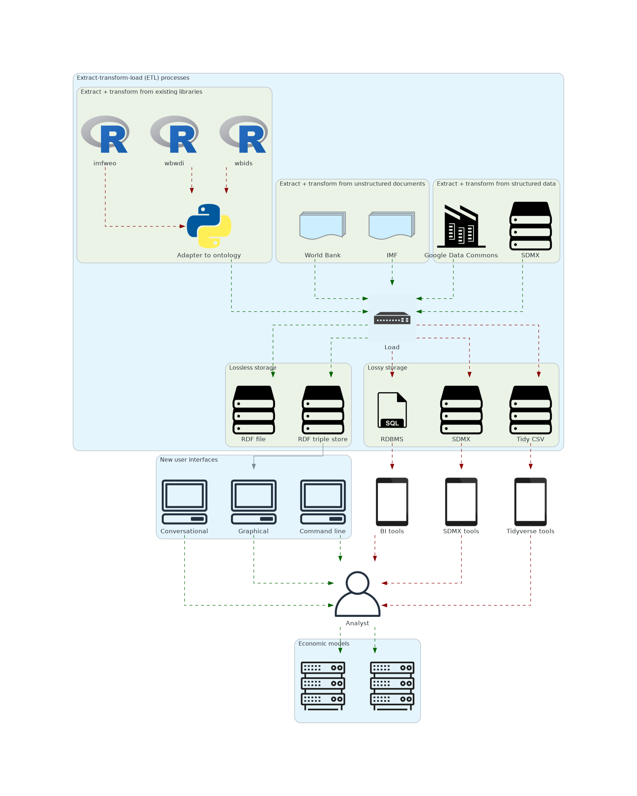

Opportunities to streamline sovereign advisory projects using advanced AI and data technologies
Authors
Minor Gordon
Kweku Ninsin
Published
2025-07-12
Executive summary
Introduction
Sovereign advisory is the specialized guidance provided to sovereign entities—particularly Ministries of Finance (MOF) and their Debt Management Offices (DMOs)—to strengthen the management of public debt, fiscal policy, and macroeconomic risks. The mission of a sovereign advisor is vital to improving debt sustainability, enhancing access to capital markets, and enabling governments to make informed, data-driven policy decisions that foster long-term economic stability and growth.
Modern technologies offer a powerful pathway forward for transforming sovereign advisory work. Artificial Intelligence (AI) technologies—especially large language models (LLMs)—alongside advanced data systems such as knowledge graphs and ontologies, present a significant opportunity to enhance the capabilities of sovereign analysts. The ability of LLMs to identify and extract information from both structured and unstructured data makes them valuable tools for uncovering insights from complex macroeconomic datasets and policy documents. Knowledge graphs and ontologies structure economic, legal, and financial data in ways that make it more interoperable, findable, and reusable. Together, these technologies can streamline labor-intensive workflows and support more consistent, timely, and data-driven decision-making.
This report explores how AI-powered platforms, when combined with robust data technologies, can unlock new levels of efficiency and effectiveness in sovereign advisory. It provides a detailed analysis of current technologies, workflows, and pain points within the sovereign debt management landscape, identifying key bottlenecks that hinder productivity and insight generation. Building on that analysis, it presents a roadmap for developing tools—along with the associated standards, conventions, and best practices—that will help eliminate toil and enhance the efficiency of both sovereign advisors and resource-constrained DMOs.
Finally, the report offers strategic recommendations for the EconDataverse toolkit. These include long-term foundational technologies and high-level data and software architectures to guide its growth—supporting increased data volume, source heterogeneity, and stakeholder diversity, while maximizing its impact on data-driven sovereign advisory work.
Problem
Sovereign debt analysis projects rely heavily on the analysis, processing, and storage of macroeconomic datasets. However, the current data-driven technologies and processes used by Debt Management Offices (DMOs) and sovereign analysts are often outdated, fragmented, and inefficient. These limitations are especially burdensome for resource-constrained institutions that are working to efficiently and effectively enhance debt analysis capacity.
A significant portion of the work required for sovereign analysis qualifies as toil: manual, repetitive, low-leverage tasks that are often automatable and devoid of long-term value. Toil scales linearly with project complexity, meaning that as the scope of sovereign advisory efforts expands, so too does the operational burden. This introduces significant wasted time and effort into a sovereign analyst’s work and weakens their ability to accomplish high-impact analytical work.
Data Processes and Technologies
Sovereign analysts depend on macroeconomic datasets from:
However, this data is often siloed, difficult to find, hard to access, and/or poorly optimized for reuse. In many cases, the data needed to answer a pressing policy question is technically available but practically inaccessible—buried within PDFs, complex spreadsheets, or outdated web portals.
This fragmented data environment complicates fundamental tasks such as harmonizing multiple datasets, preserving data quality, or combining structured and unstructured information. Sovereign analysts may spend hours, if not days, locating, extracting, and validating data before any meaningful analysis can begin. The result is not only wasted time and effort, but also delayed insights that could inform critical policy choices.
These models are often opaque and complex, with multivariate inputs linked to policy-relevant outputs through undocumented, hard-to-follow logic.
There is typically no clear record of how input variables influence key indicators, or how one might efficiently trace through the model to answer a specific policy question.
This forces analysts to spend valuable time and effort on reverse-engineering spreadsheets.
For example, in the LIC-DSF, the process of identifying the appropriate inputs for variables such as “Indicators of Public and Publicly Guaranteed External Debt under Alternative Scenarios” and “Indicators of Public Debt Under Alternative Scenarios”—both essential for conducting macroeconomic stress tests and assessing a country’s debt-carrying capacity—typically involves:
manually narrowing down relevant inputs to infer relationships
manually validating those inferences
recreating the validated logic across new spreadsheets to replicate results
This process is highly labor-intensive, error-prone, and non-replicable at scale. The absence of automation or documentation not only creates inefficiencies, but also introduces risks to the consistency and credibility of the analysis.
Modern AI technologies and advanced data systems offer an opportunity to reimagine the way sovereign analysis is done. These technologies have the capabilities to address these challenges to enhance the efficiency, accuracy, and impact of sovereign advisory work. By automating repetitive tasks and streamlining data workflows, these tools can eliminate toil and free up a sovereign analyst’s time for more high-value work.
Solution criteria
A successful solution should save time and effort on data-driven sovereign advisor projects by eliminating unnecessary toil. In particular, we will focus on opportunities to optimize the use and reuse of data in these projects by making data more findable, accessible, interoperable, and reusable, following the FAIR Guiding Principles (TKTK ref). A solution should address existing challenges in:
finding and accessing the right economic data and data
integrating heterogeneous data from different sources
exchanging data and metadata between applications and storage in a way that preserves unambiguous, shared meaning
dealing with missing and low-quality metadata
tracking data provenance
Modularity
A solution should be modular rather than monolithic, with loosely coupled modules that communicate via a well-specified interchange. Each module should “do one thing well”, following the Unix philosophy.
Frequent releases
A solution should be iteratively developed, with frequent releases. Module releases should start from a Minimum Viable Product (MVP) and incrementally add functionality on every release, rather than trying to perfect one feature before moving on to another – the “skateboard to car” approach espoused by Henrik Kniberg.
Thorough testing will be essential to ensuring consistent functionality, protecting against regressions, and helping users trust that releases will work as expected across different environments. Tests should cover the entire test pyramid (also c.f., https://testing.googleblog.com/2010/12/test-sizes.html), with unit tests of individual modules as well as integration tests combining modules.
Flexibility
A solution should be flexible enough to accommodate unanticipated future sources of data and financial models. It should avoid premature generalization (YAGNI) as well as over-specialization.
Scalability
A solution should scale in multiple dimensions, including the number of modules, the number of developers, and the volume of data.
Vendor-neutrality
A solution should be as vendor-neutral as possible. It should build on community-maintained open source projects in preference to commercial packages.
Reuse
A solution should avoid needless reinvention and Not Invented Here and take advantage of existing intellectual capital, particularly existing data models.
Transparency
New code should be released under the MIT License, which permits wide usage and modification. The MIT License promotes transparency, allowing users to freely adapt the tools for their specific needs while contributing improvements to the community.
Solution
In the following sections we recommend a solution that entails: * increasing semantic interoperability between tools in the EconDataverse * linking data to other data and metadata * constraining data and metadata using ontologies * developing new tools that rely on semantic interoperability, linked data, and ontologies to streamline economic data reuse
Semantic interoperability
The EconDataverse is both a set of software tools in R and Python and a set of conventions and best practices for developing tools that work with economic data. There are coding conventions that ensure consistent style across packages as well as data syntax conventions that ensure compatibility with popular data manipulation and visualization libraries in both R and Python.
Interoperability between tools in the EconDataverse is a key concern, since deficiencies in interoperability create additional toil for the user. In the EconDataverse the problem of interoperability is one of ensuring the tools “speak the same language”. A simple approach to this problem is to consider language as equivalent to syntax, and ensure that tools consume and produce the same syntax, such as the tidy format (TKTK ref) espoused by current EconDataverse tools. This reduces the toil associated with transforming syntax between tools but leaves the problem of semantic interoperability.
In this context semantic interoperability is the ability of different tools to exchange data with unambiguous, shared meaning. It ensures that the meaning of the data is preserved and correctly interpreted between tools, even if those tools use different technologies, such as R and Python.
Semantic interoperability starts from agreeing on unambiguous identifiers for things. For example, the EconDataverse package maintainers have agreed to refer to countries using ISO 3166-1 standard codes and to represent years using four digits and the Gregorian calendar. This consensus ensures that data from different sources about the same countries and years can be joined, as in the R example below:
Note
Teal: ChatGPT generated this example. It’d be great to have a better one along the same lines.
# Load required packagelibrary(dplyr)# --- Macroeconomic dataset: GDP (in USD billions) ---macro_data <-data.frame(iso3c =c("USA", "FRA", "DEU", "JPN"),year =c(2024, 2024, 2024, 2024),gdp_billion =c(27300, 3100, 4600, 5100))# --- Population dataset: Population (in millions) ---population_data <-data.frame(iso3c =c("USA", "FRA", "DEU", "BRA"),year =c(2024, 2024, 2024, 2024),population_million =c(334, 67, 84, 215))# --- Perform inner join on ISO country code and year ---joined_data <-inner_join(macro_data, population_data, by =c("iso3c", "year"))
Imagine that the structure of the two datasets stayed the same but they used different identifiers for countries: one dataset referred to the United States as “États-Unis” while the other referred to it as “USA”.
# --- Macroeconomic dataset: GDP (in USD billions) ---macro_data <-data.frame(iso3c =c("États-Unis", "FRA", "DEU", "JPN"),year =c(2024, 2024, 2024, 2024),gdp_billion =c(27300, 3100, 4600, 5100))# --- Population dataset: Population (in millions) ---population_data <-data.frame(iso3c =c("USA", "FRA", "DEU", "BRA"),year =c(2024, 2024, 2024, 2024),population_million =c(334, 67, 84, 215))# Join on USA data is not going to work as intended here.
The data analyst would have to first resolve the discrepancy – mapping “États-Unis” to “USA” or vice versa – in order to harmonize data from multiple sources. That work is toil that can be eliminated by agreeing on unambiguous identifiers and using them consistently.
Uniquely identifying numeric data
The R example in figure X also includes numeric data such as GDP (in billions of of US Dollars) and population (in millions). Unlike the ISO 3166 country codes, these data have ambiguous meanings. A human data analyst can infer at least part of the meaning from the column name (gdp_billion) and the accompanying comment (“GDP (in USD billions)”). Other parts are still ambiguous – is it nominal or real GDP?
We would like to eliminate this ambiguity and the toil required to resolve it by associating numeric data with unambiguous metadata. The SDMX Information Model recommends that the metadata for a numeric datum include:
Attributes of the datum, such as units of measurement
The dimensions uniquely identifying a single nominal GDP measurement are:
Place: the country associated with the GDP (e.g., “USA” and “FRA”)
Time: the year the GDP was measured (e.g., 2024).
Indicator: nominal GDP
Dimensions like “place” and attributes like “unit of measurement” should themselves be uniquely identified, and have associated properties such as human-readable labels and definitions, relationships with other dimensions or attributes, and constraints on the values that can be associated with a dimension (e.g., code lists). The SDMX Content-Oriented Guidelines provide a library of well-known, uniquely-identified dimensions and attributes that can be reused in many different domains.
Linking data
We can use the unambiguous identifier for a thing (“USA”) in the data as a key to resolve additional properties about the thing as well as its relationships with other things, following the Linked Data principles. For example, we can use schema.org vocabularies to describe the relationship between the country of the United States and the continent of North America, in a machine-readable format (an RDFknowledge graph represented in Turtle):
@prefix ex: <http://example.org/entities/> .
@prefix schema: <https://schema.org/> .
# United States of America
ex:USA a schema:Country ;
# Human-readable labels in multiple human languages
schema:name "United States of America"@en ;
schema:name "États-Unis"@fr ;
schema:identifier "USA" ;
# A relationship: the country United States is contained in the place North America.
schema:containedInPlace ex:NA .
# North America
ex:NA a schema:Continent ;
schema:name "North America"@en ;
schema:identifier "NA" .
Constraining data and metadata
There is an additional level of consensus at work in the example above. By referencing schema.org we are implicitly agreeing that the unambiguous identifier schema:containedInPlace refers to a way of relating two places. That identifier can be used in turn as a key to further linked metadata:
@prefix rdfs: <http://www.w3.org/2000/01/rdf-schema#> .
@prefix schema: <https://schema.org/> .
schema:containedInPlace a rdf:Property ;
rdfs:label "containedInPlace" ;
rdfs:comment "The basic containment relation between a place and one that contains it." ;
schema:domainIncludes schema:Place ;
schema:inverseOf schema:containsPlace ;
schema:rangeIncludes schema:Place .
This metadata is part of an ontology. An ontology is an “explicit specification of a conceptualization” (TKTK ref Gruber 1995) of a domain, including the “the types, properties, and interrelationships of entities that exist for a particular domain of discourse” (TKTK ref Gene Ontology Consortium). An ontology includes machine-readable specifications as well as human-readable labels and definitions that codify shared understanding of a domain. In the snippet above the domain is geography – places and a valid relationship (contained-in) between them. The ontology is not about specific places, but about the category “place”, its possible properties, and how it relates to other categories. The example eliminates ambiguity what schema:containedInPlace means through the use of a human-readable definition (“The basic containment relation …”) as well as machine-enforceable constraints on the categories of things that can be involved in the schema:containedInPlace relation (the schema:domainIncludes and schema:rangeIncludes). By constraining the domain of discourse an ontology amplifies the benefits of reusing identifiers by providing further clarity to humans as well as a way for machines to ensure that data and metadata stay within those constraints.
An ontology of economics
Ontologies like the Financial Industry Business Ontology (FIBO) are commonly used in the financial services sector to enable cross-system federation and aggregation of data in order to support decision-making, streamline regulatory reporting, and encourage the adoption of advanced analytical capabilities.
Unfortunately, the macroeconomics domain does not have an ontology comparable in scope and rigour to FIBO. We recommend developing an ontology of macroeconomics incrementally. At a minimum this ontology should model:
the structure of statistical data cubes (dimensions, attributes, measures)
common dimensions such as time, place, and macroeconomic indicators
common attributes such as units
In the long term the ontology should also model:
relationships between dimensions e.g., different macroeconomic indicators
relationships between attributes e.g., unit conversions
data lineage and provenance
modeling assumptions
information about economic organizations, people, and the relationships between them (a social network)
information about places and relationships between them (e.g., aggregates such as Low Income Countries)
machine-readable assertions extracted from human-written web pages and other documents (a knowledge graph about the economic world)
Fortunately, there are a number of existing standards that can serve as building blocks for the ontology, including:
Increasing semantic interoperability, developing ontologies, and taking advantage of linked data will reduce the toil and increase the productivity of using existing tools in the EconDataverse. However, in order to fully address the challenges highlighted in Section 4, we also recommend expanding and refining the EconDataverse toolkit in three key areas:
tools for extracting and transforming economic data and metadata
tools for exploring and finding economic data and metadata
tools for analyzing and manipulating financial models
Figure Figure 1 illustrates our proposal for a new high-level system architecture for EconDataverse tools.
Warning: node 'e3459125a11549f0be5f799e4db160f8', graph '%3' size too small for label
Warning: node 'b9b929f7272e4815917293cd6a4c039f', graph '%3' size too small for label
Warning: node '4e4600f68fee4f639149f31d9beb5c86', graph '%3' size too small for label

Figure 1: Recommended EconDataverse system architecture
Green lines indicate the flow of ontology-conformant data and metadata while red lines indicate the flow of data in other formats.
The following subsections delve into the proposed tool developments in more detail.
Tools for extracting, transforming, and loading economic data and metadata
The majority of packages in the current EconDataverse package ecosystem extract structured data from IMF, World Bank, and other sources and transform them into tidy format, with each variable as a column and each observation as a row. Metadata are typically limited to column names, which are not explicitly grounded in an ontology that would provide context and definitions. With the notable exception of ISO 3166 country codes, there is relatively little standardization of non-numeric data across data sources.
In the short- to mid-term we recommend implementing an adapter library and command-line program that transforms ontology-conformant data to and from the formats expected by existing EconDataverse tools. In the long term these tools should be retrofitted to produce and consume ontology-conformant data and metadata.
New tools in the EconDataverse should produce ontology-conformant data and metadata that fully capture the semantics of the source data. These can be easily but lossily transformed into convenient but semantics-poor formats like tidy data frames for compatibility with third party tools.
Extraction should not be limited to structured data sources. The ontology can also be used to guide Large Language Models (LLMs) in the extraction of ontology-conformant structured data from natural language sources such as the World Bank country and climate development reports or the IMF’s Debt Sustainability Analysis Low-Income Countries (DSA LIC reports). The latter comprise a mixture of narrative text, rendered tables, and charts as PDFs. We recommend starting by extracting statistical data cube-compatible data (dimensions, attributes, measures) from tables in the documents and experimenting with different libraries and APIs such as pdfplumber and AWS Textract to identify a toolchain that maximizes key extraction metrics such as precision, recall, and F1 score.
Ontology-conformant data and metadata extracted and transformed by new and existing tools should be loaded into a store that can preserve the full richness of the data, such as an RDF triple store. The tools described in the next subsection should query this store.
Tools for exploring and finding economic data and metadata
Tools for exploring and finding data and metadata tend to be useful in proportion to how closely the data’s representation corresponds to the domain abstractions, like accounts and sub-accounts in Balance of Payments datasets. This requires a level of abstraction and interpretation that is difficult to achieve without building data source-specific tools. Instead, most generic tools work with data and metadata at the lowest common denominator of abstraction – as tables and rows of figures to be scanned or a corpus of arbitrary text to be searched. The problem of interpretation is mostly left up to the user.
Having data and metadata from multiple sources conform to a rich, domain-specific ontology makes it possible to build tools that work at a higher level of abstraction without sacrificing source independence. Tools can make assumptions about the meaning of the data and relationships between them, which dramatically increases the tools’ power. For example, the next generation of EconDataverse tools could:
group or aggregate data from different (geographic) reference areas by considering explicit relationships between areas, such as part-whole or collection membership
let users browse and filter cube-structured datasets and slices by the dimensions they incorporate (e.g., time, place, gender), provenance, or recency
suggest inputs for a given model by matching metadata about the inputs with metadata from a data/metadata catalog
These user-facing tools could have different interfaces or combinations of interfaces: * command line programs * graphical user interfaces * a conversational user interface * programmatic interfaces (APIs), such as a SPARQL endpoint or an SDMX Registry
Tools for analyzing and manipulating financial models
Finally, the EconDataverse needs tools for analyzing and financial models, which are typically encoded in Excel spreadsheets. In the short term, tools should automate or semi-automate toilsome tasks like:
Manually reverse-engineering spreadsheets to identify which inputs are required for a subset of desired outputs, in order to avoid spending time populating redundant inputs
Manually mapping statistical data cube measures to spreadsheet inputs
Manually changing spreadsheets inputs in order to perform sensitivity analyses
Identifying minimal spreadsheet inputs
We recommend identifying or developing a tool that accepts a spreadsheet-based financial model such as the LIC DSF or the Dynamic Debt Toolkit and identifies which inputs are required for a subset of desired outputs, in order to avoid spending time populating redundant inputs. There are two fundamental approaches to this problem:
White box: build a dependency graph of spreadsheet formulae spanning the inputs and outputs in order to identify which inputs the desired outputs depend on. This approach is likely to produce false positives – flagging a set of inputs larger than the true minimum – because it is insensitive to the magnitude of input changes.
Black box: mutate individual inputs and combinations of inputs and record which outputs change. This approach may produce false negatives – flagging a set of inputs smaller than the true minimum – because of untested interactions between inputs.
Ideally a tool will utilize both approaches to check each other.
Disambiguating inputs
Much of the toil in using financial models lies in the process of identifying the right source data to supply as model inputs. For example, the Debt Dynamics Toolkit spreadsheet requires the following inputs in a single sheet:
Dynamic Debt Toolkit inputs sheet
Year / Variable
2011
2012
dt (debt including uncalled guarantees): stock of total gross public debt, percent of GDP
31.59
35.34
o/w stock of local-currency guarantees (uncalled): stock of uncalled guarantees in local currency included in total debt, percent of GDP
0.00
0.00
o/w stock of foreign-currency guarantees (uncalled): stock of uncalled guarantees in foreign currency included in total debt, percent of GDP
0.00
0.00
αt (share excl. guarantees): share of foreign currency denominated debt in total debt, percent of total debt
55.05
58.87
et (LCU/FCU, avg): nominal average exchange rate, local currency per unit of foreign currency
18.92
19.50
et (LCU/FCU, eop): nominal end of period exchange rate, local currency per unit of foreign currency
19.05
19.96
itd: nominal effective interest rate on local currency denominated debt, percent
oft (other net debt-creating flows): Other net debt creating flows, percent of GDP
0.00
0.00
πft: Foreign GDP deflator inflation, percent (used in fan chart)
2.09
1.92
Per the data cube model, each input cell can be uniquely identified by dimensions:
Time: with controlled values 2011 and 2012
Place: implicitly, the country whose debt is being analyzed
Indicator: such as “Real GDP growth”
In this case the year and place are unambiguously identified and are relatively easy to match to source data. It is not as obvious how to map the indicator “nominal effective interest rate on foreign currency denominated debt, percent” to source data.
One approach is to treat “nominal effective interest rate on foreign currency denominated debt, percent” as a unique identifier as-is, like Google Data Commons does. This is likely to work for some simple indicators like “nominal GDP” but falters on more complex indicators that could be described in different ways, like this example.
The approach we recommend is to decompose the name into a structured combination of sub-identifiers:
a base indicator: “interest rate”
qualifiers on the base indicator: “nominal”, “effective”, “on foreign currency denominated debt”
attributes: “percent”, which should be treated as an attribute of the data rather than as part of the indicator dimension
The structure and valid combinations of indicator, qualifier, and attribute values should be dictated by the ontology. Given a permissible set of controlled values, a Large Language Model could aid in this decomposition from natural language.
This approach parallels the way World Bank debt codes can be decomposed into segments. For example, the World Bank debt code DT.DOD.[Debt Instrument].[Debtor/Creditor Sector].[Unit] can be decomposed into:
DT: Debt
DOD: Debt Outstanding and Disbursed
Instrument Type (e.g., long-term, short-term, use of IMF credit)
Debtor or Creditor (e.g., public, private, multilateral, bilateral)
Unit of measure (e.g., CD = current US dollars, GD.ZS = % of GNI)
Automating sensitivity analyses with spreadsheets
The “black box” approach to identifying minimal spreadsheet inputs, described in Section 5.4.4, can also be used to perform sensitivity analyses by mutating combinations of spreadsheet inputs and recording which outputs change.
Models as data, models as code
In the long term the financial models themselves should be treated as data, and extracted and transformed into ontology-conformant data and metadata. This approach would build on open source precedents like Morphir, a system that captures an application’s domain model and business logic in a portable / technology-agnostic manner. Given a portable representation of a model and an input dataset, we can execute the model by either:
Generating code from the representation and executing the code.
Morphir takes the former approach. We would recommend the latter: lossily generating spreadsheets, Python, R, or other code from ontology types (e.g., dimensions and measures) and a portable model representation. The advantage of this approach is that it would produce an intermediate artifact (generated code) that can be inspected by human users and utilized from non-generated code in a way that ensures model inputs conform to the expected ontology types, above and beyond simple syntax checking.
Recommendations
We recommend implementing the proposed EconDataverse system architecture (Figure 1) iteratively, following agile principles. Rather than focusing on any single part of the system architecture, we recommend developing a set of minimum viable implementations of the different components that together address a useful, end-to-end scenario involving a simple economic model, the IMF’s Dynamic Debt Toolkit (DDT), applied to a reference country (Ghana). Specifically, the tools should help the human analyst:
Identify a minimum set of spreadsheet inputs for a given output of the DDT template, as described in Section 5.4.4
Map the input labels to known data cube dimensions and attributes, as described in Section 5.4.5
Find data associated with these dimensions in a store of ontology-conformant data and metadata, as described in Section 5.4.2
A batch process should eagerly populate the store queried by step #3 by extracting, transforming, and loading a subset of relevant ontology-conformant data and metadata (per Section 5.4.1) from at least two data sources, such as
The aggregation, linking, and subsequent querying of data and metadata from multiple sources will demonstrate the value of ontology-based semantic interoperability between tools.
The following subsections recommend specific implementation projects to address the end-to-end scenario.
A tool for identifying minimal spreadsheet inputs
We recommend identifying or developing a tool that accepts a spreadsheet-based financial model like the Dynamic Debt Toolkit and identifies which inputs are required for a specific subset of desired outputs, in order to avoid spending time populating redundant inputs.
Further, we recommend implementing Python and R libraries for manipulating ontology-conformant data and metadata as type-safe data structures (e.g., classes in Python) and serializing and deserializing data to and from lossless (RDF) and lossy (CSV) formats.
Extract-transform-load (ETL) pipelines
We recommend developing pipelines that extract and transform data and metadata from the two sources and load them into an RDF triple store that enforces ontology conformance using SHACL validation. For batch ETL, we recommend utilizing a workflow orchestration tool such as Apache Airflow or Dagster. The pipelines should use the Python and/or R libraries described in the previous subsection. Each phase of a pipeline (extract, transform, load) should be decoupled from the others in modules that can be reused in other contexts (e.g., doing ad hoc extraction and transformation in a computational notebook). Depending on the data sources, these pipelines could be implemented from scratch to produce ontology-conformant data or they could wrap one of the existing EconDataverse libraries, transforming the existing tidy output to ontology-conformant data. .
A web application for exploring and finding ontology-conformant data and metadata
We recommend implementing a full-stack web application for querying the RDF triple store populated by the ETL pipelines. The application should initially consist of a reusable library mediating database access and a graphical user interface that offers multiple forms of search functionality:
semantic search that accepts the string descriptions of inputs in the DDT spreadsheet (c.f., Section 5.4.5) and maps them to well-known data cube dimensions and attributes
![]()